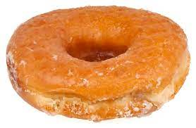

) Why doughnuts are the best food
Doughnuts are one of the most delicious and versatile foods in the world. They come in many different shapes and sizes, and can be enjoyed as a snack, dessert, or even breakfast. Doughnuts are also incredibly easy to make and can be customized with different flavors and toppings. The fluffy texture of the dough and the sweetness of the icing make them a favorite for all ages. Not only are they delicious, but they are also a great source of energy and a good way to get your day started. So, next time you have a craving for something sweet, why not grab a doughnut? You won't regret it!